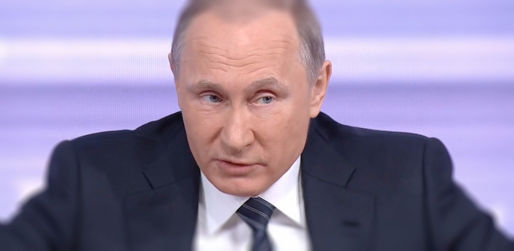

Партнеры БСК о вопросах международной безопасности
Авторская статья экспертов БСК (www.burcon.ru) о последствиях протеста дальнобойщиков для российской политической системы. Лид, три или четыре строчки, бокс 900X200px, vertical align centre
15 ноября начала работу система оплаты проезда большегрузного транспорта по федеральным дорогам «Платон», предусматривающей взимание платы за проезд автомобилей тяжелее 12 тонн по федеральным трассам по километражу. Для обеспечения работы системы привлечен коммерческий оператор «РТ-Инвест». Протесты дальнобойщиков в связи с внедрением «Платона» перешли в более острую фазу: теперь акции в регионах, продолжающиеся с начала ноября, сменились попытками организовать крупную, всероссийскую акцию протеста.
В ноябре правительство частично пошло на встречу транспортникам, объявив о временном моратории на штрафы за неоплату проезда до мая 2016 года на всей территории РФ, за исключением Москвы и Московской области. Тем не менее, в вопросе о сохранении системы «Платон» правительство заняло жесткую позицию: основное требование протестов об отмене «Платона» не рассматривается.
Ранее, на 30 ноября, была анонсирована акция с выдвижением колонн большегрузных автомобилей в Москву, но межрегиональный профсоюз дальнобойщиков на митинге 29 ноября в Ростове-на-Дону устами своего председателя Александра Котова объявил о переносе акции на 3 декабря, попутно выдвинув Правительству и Государственной Думе ультиматум с требованием отключить систему к этому времени. Некоторые водители, однако, не приняли решение профсоюза к сведению и отправились в Москву уже в понедельник – но не смогли согласовать свои действия. Кроме того, по сведениям протестующих, проникновению пустых фур в Москву препятствовали работники ДПС. В Дагестане – регионе, где дальнобойщики протестуют наиболее активно – региональные власти не дали водителям выехать за пределы республики.
Комментарий президента по поводу акций протеста водителей-дальнобойщиков и системы «Платон» был на удивление подробным и предметным.
По мере активизации протеста его пытаются возглавить профессиональные политики как из системной, так и из радикальной оппозиции. Либеральная оппозиция стремится использовать для своего политического продвижения анонсированные самими дальнобойщиками акции и протестные инициативы.
В поддержку дальнобойщиков в своем блоге высказался либеральный оппозиционер Алексей Навальный. На прошедшей накануне акции в Санкт-Петербурге ключевыми «спикерами» для СМИ от дальнобойщиков стали профессиональные политические активисты Сергей Гуляев и Александр Расторгуев, не являвшиеся водителями грузовиков. Первый из них давно известен в политическом сообществе Санкт-Петербурга: в 2007 году он, совместно с Алексеем Навальным, стал соучредителем «национал-демократического движения «Народ» (согласно циркулировавшим тогда сведениям, являвшегося «детищем» известного политтехнолога Станислава Белковского). Александр Расторгуев – руководитель регионального отделения партии «ПарНаС», ранее был замечен в акциях либеральной оппозиции в поддержку Украины. Представители другого проекта Алексея Навального – «РосЯма» - также активно заявляли о себе на акциях протеста дальнобойщиков в Екатеринбурге.
Значительно основательнее выглядит политическая стратегия системной оппозиции, прежде всего, КПРФ. Партия анонсировала проведение 5 декабря всероссийской акции в поддержку требований дальнобойщиков. Планируется организация серии политических мероприятий - митингов и пикетов - в ряде регионов. Депутаты Государственной Думы от партии активно комментируют ситуацию вокруг «Платона» и используют её для критики экономической политики правительства Дмитрия Медведева (являющегося, кстати, председателем партии «Единая Россия»).
Проблема реагирования на требования дальнобойщиков поднята на уровень Администрации президента РФ. Пресс-секретарь президента России Дмитрий Песков уже заявил, что Владимир Путин осведомлен об акциях протеста. 2 декабря с представителями сообщества дальнобойщиков встретится рабочая группа Совета по правам человека при Президенте РФ. Следует также отметить, что на прошедшей неделе с представителями дальнобойщиков и транспортных компаний в нескольких регионах, в частности, в Санкт-Петербурге и Екатеринбурге, встречался Министр транспорта РФ Максим Соколов – хотя значимых результатов в ходе этих встреч достигнуто не было.
Комментарий президента по поводу акций протеста водителей-дальнобойщиков и системы «Платон» был на удивление подробным и предметным.
Примечательно, что кульминация акций протеста намечена на период непосредственно до и сразу после предстоящего оглашения ежегодного Послания Президента РФ Федеральному собранию. Едва ли это случайное совпадение. Протестующие прямо апеллируют к Владимиру Путину как к верховному арбитру, способному принять к сведению их аргументы и вынудить правительство принять компромиссное решение.
Несмотря на драматизм внешнеполитической повестки дня, когда внимание общества приковано к событиям вокруг кризиса российско-турецких взаимоотношений и возможной угрозе дальнейшей военной эскалации в Сирии, сочетание тревожных внешнеполитических новостей с внутренними протестами создает нежелательный информационно-политический фон для российской власти. Не организовав процесс внедрения новой системы должным образом (в частности, не обеспечив большее число большегрузных автомобилей учетными терминалами), не отреагировав оперативно, российское правительство и российская власть в целом получили возрастание уровня рисков внутриполитической дестабилизации.
Ситуация с протестами дальнобойщиков, вышедших за рамки отраслевого события, свидетельствует об уязвимости государственной системы принятия решений в сложной экономической ситуации: непопулярные меры по бюджетной экономии или поиску новых бюджетных доходов, неизбежные в условиях экономического кризиса, слабо анализируются в части их политических последствий. Россия столкнулась с необходимостью синхронизации экономической и внутриполитической стратегий. От решения этой задачи во многом зависит нормальное прохождение страной предвыборных кампаний 2016-2018 годов.